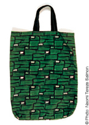
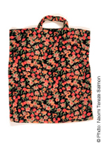
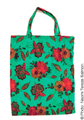
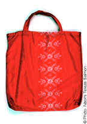
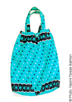
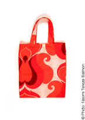
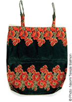
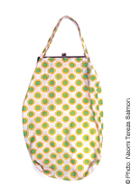
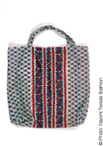

|



"DDR Beutel 1:1", 1998. Cloth bag* Shift bag Saxon case Flowered bags were the Cindarellas of everyday culture in former East Germany. Containers for scarce commodities, coverings for daily necessities. Nobody knows where they came from. Nobody looked at them. The most mundane item does not warrant a second glance. Now, having become obsolete, they are themselves rare items - vestiges of everyday poetry, a reflection of a past norm, nostalgic vehicles for memory, brightly textured fabric. *a brightly colored cloth shopping bag, found and bought in Thuringia after the reunification of Germany, Photos scale 1:1 Supply: endless.       Close Window All content copyright 2006 Naomi Tereza Salmon - all rights reserved |